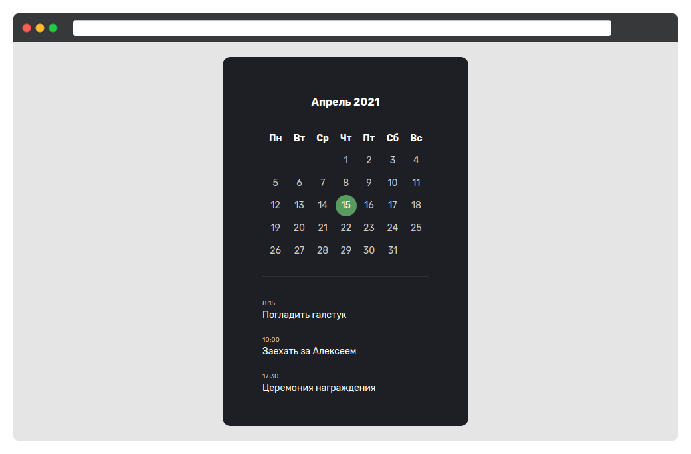

Календари очень часто используются на веб-страницах. Их реализация бывает невероятно разнообразной. Такое испытание можно вставить в любой курс и получить совершенно разные варианты вёрстки. В этом испытании вы реализуете календарь с использованием максимально доступных средств.

Основные стили (body)
- Цвет текста:
#fff - Размер шрифта:
16px - Межстрочный интервал:
1 - Шрифт: Rubik. Файлы шрифтов находятся в директории assets
- Цвет фона:
#e5e5e5
Обёртка календаря (селектор .calendar)
- Ширина:
250px - Внутренние отступы:
60пикселей сверху, справа и слева.30пикселей снизу - Фон:
#1e1f25 - Закругление:
12px
Заголовок второго уровня
- Внешний отступ снизу:
30px. Отступы с остальных сторон:0px - Жирное начертание
- Размер шрифта:
16px - Выравнивание текста по центру
Календарь
- Ширина:
100% - Внешний отступ снизу:
30px - Внутренний отступ снизу:
20px - Размер шрифта:
14pxс межстрочным интервалом2 - Граница снизу с цветом
#313131и размером 1 пиксель
Ячейки с числами
- Цвет чисел:
#cccс выравниванием по центру. - Внутренний отступ у чисел:
0 - Межстрочный интервал:
2.3
Список дел
- Внешние отступы у названия:
5pxсверху и20пикселей снизу - Размер шрифта названия дела:
14px - Цвет времени:
#ccc - Размер шрифта времени:
10px - Сбросьте внешние и внутренние отступы у списка
Подсказки
Путь к шрифтам:
../assets/fonts/Rubik-Regular.woff2
../assets/fonts/Rubik-Bold.woff2